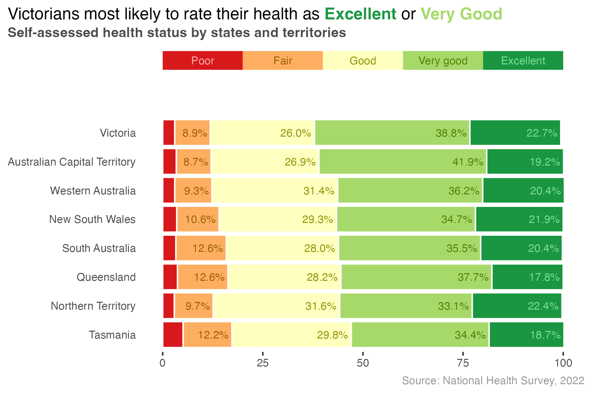
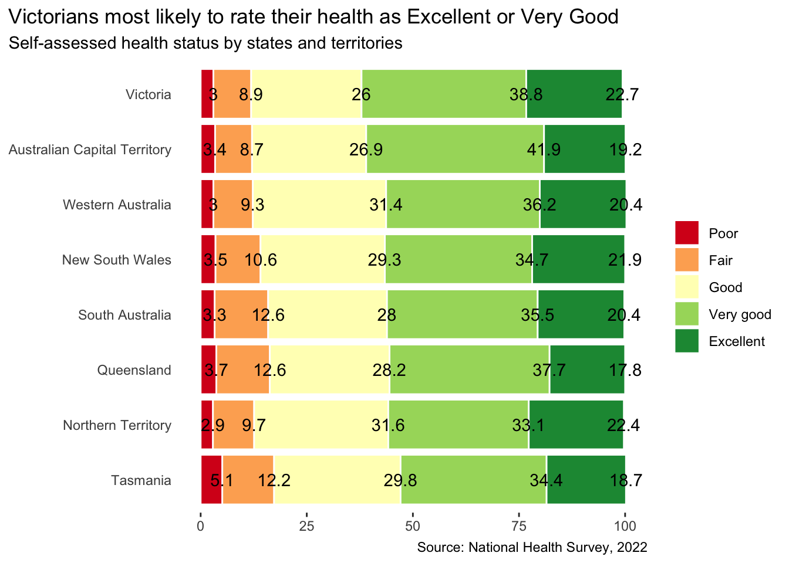
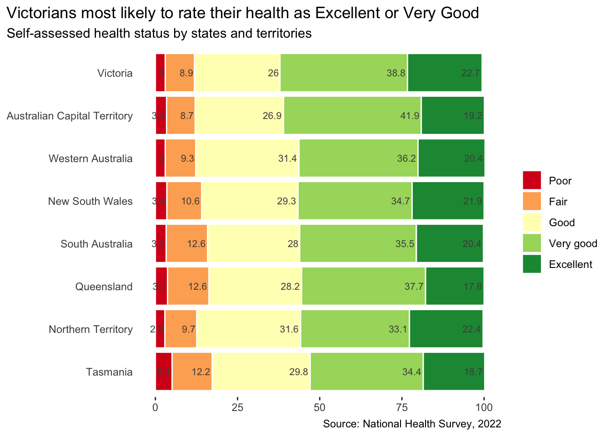

We have a lot done but more to do. In this section we will work on adding text labels to the stacked column chart
(a) Where we are up to

(b) The final goal
Figure 1
If you have successfully navigated the previous section, your code should look a bit like the code below:
Code
################################################################# Project: National Health Survey 2022 Analysis# Purpose: Plot self-assessed health data by state# Inputs: exercises/3-clean-data/vis1.Rda# Outputs: exercises/4-outputs/yyyy-mm-dd-self-assessed-health.png# Author: Mark Hanly############################################################################### Preparation ################# Load librarieslibrary(dplyr)library(ggplot2)library(forcats)library(RColorBrewer)# Load cleaned dataload('exercises/3-clean-data/vis1.Rda')# Create variable indicating % very good or excellent healthdf1Plot <- df1Clean |>group_by(state) |>slice(4:5) |>summarise(totalHealthy =sum(percent)) |>left_join(df1Clean, by ='state')# Custom bar coloursbarCols <- RColorBrewer::brewer.pal(5, 'RdYlGn')###################### Plotting the data ######################ggplot(data=df1Plot,aes(x = percent, y =fct_reorder(state, totalHealthy), fill=status)) +geom_col(position =position_stack(reverse =TRUE),color ="white") +scale_fill_manual(name =NULL,values = barCols) +scale_y_discrete(NULL) +scale_x_continuous(NULL) +labs(title ='Victorians most likely to rate their health as Excellent or Very Good',subtitle ='Self-assessed health status by states and territories',caption ='Source: National Health Survey, 2022') +theme(plot.title.position ='plot',panel.background =element_blank(),axis.ticks.y =element_blank() )
You can copy-paste this code into your script if you want to start from this point in the exercise.
2 Add text labels
Let’s dive right in and add text labels using geom_text(). There are two things to be aware of as we do this:
geom_text() has a required aesthetic label which we have not specified so far. The label aesthetic maps a variable to the text label that appears on the chart; in our case that will be the variable percent. So we will add label = percent to the other aesthetic mappings in aes().
In the last section we set position = position_stack(reverse = TRUE) to reverse the order of the health categories in geom_col(). To make sure the labels match the categories we will have to do the same thing here for geom_text().
Code
# Add geom_textggplot(data=df1Plot,aes(x = percent, y =fct_reorder(state, totalHealthy), fill = status,label = percent)) +geom_col(position =position_stack(reverse =TRUE),color ="white") +geom_text(position =position_stack(reverse =TRUE)) +scale_fill_manual(name =NULL,values = barCols) +scale_y_discrete(NULL) +scale_x_continuous(NULL) +labs(title ='Victorians most likely to rate their health as Excellent or Very Good',subtitle ='Self-assessed health status by states and territories',caption ='Source: National Health Survey, 2022') +theme(plot.title.position ='plot',panel.background =element_blank(),axis.ticks.y =element_blank() )

3 Format the text labels
Okay, this is a start but also obviously gross. There are a few arguments we can quickly add to geom_text() to make things look better.
size = 8/.pt will reduce the font size to 8 points
hjust = 1.1 will add some horizontal justification, shifting the labels towards the end of their bars
color = grey30 will apply a lighter shade of grey
.pt is an internal constant in R that allows us to convert millimeters (mm) to point size. In geom_text(), the size is defined in mm. Setting size = 8/.pt is a quick way of figuring how many mm we need to get a font size of 8 points (which is about the smallest font size that can be comfortably read). To test this you can enter 8/.pt at the console.
Code
# Tidy up the text labelsggplot(data=df1Plot,aes(x = percent, y =fct_reorder(state, totalHealthy), fill = status,label = percent)) +geom_col(position =position_stack(reverse =TRUE),color ="white") +geom_text(position =position_stack(reverse =TRUE),size =8/.pt, hjust =1.1,color='grey30') +scale_fill_manual(name =NULL,values = barCols) +scale_y_discrete(NULL) +scale_x_continuous(NULL) +labs(title ='Victorians most likely to rate their health as Excellent or Very Good',subtitle ='Self-assessed health status by states and territories',caption ='Source: National Health Survey, 2022') +theme(plot.title.position ='plot',panel.background =element_blank(),axis.ticks.y =element_blank() )

4 Format the labels
This is a step in the right direction. Another improvement would be to nicely format the labels so that the number of decimal places is always the same, i.e. 26 should appear as 26.0. We can also add a % symbol so we get 26.0%.
Rather than change the underlying data, we can make both of these changes on the fly in the ggplot code by updating how the label aesthetic is defined. In particular, we will set label = paste0(format(percent, nsmall=1), '%').
To see what this is doing try breaking it into two steps and entering the following at the console:
format(26, nsmall=1)
paste0("26.0", "%")
Code
# Format the text labelsggplot(data=df1Plot,aes(x = percent, y =fct_reorder(state, totalHealthy), fill = status,label =paste0(format(percent, nsmall=1), '%'))) +geom_col(position =position_stack(reverse =TRUE),color ="white") +geom_text(position =position_stack(reverse =TRUE),size =8/.pt, hjust =1.1,color='grey30') +scale_fill_manual(name =NULL,values = barCols) +scale_y_discrete(NULL) +scale_x_continuous(NULL) +labs(title ='Victorians most likely to rate their health as Excellent or Very Good',subtitle ='Self-assessed health status by states and territories',caption ='Source: National Health Survey, 2022') +theme(plot.title.position ='plot',panel.background =element_blank(),axis.ticks.y =element_blank() )
5 Adjust the colours
This is better but there are still a few problems:
The grey colour of the text labels works quite nicely against the yellow background but not so good against the dark green background.
There isn’t really room for text labels for the Poor category.
We can tackle both of these issues by adjusting the label text colour for each health category. We will customise the text colours choosing ones that contrasts well against the background fill colors. For the Poor category, we will simply set the colour to be transparent.
A convenient way to choose contrasting colours is to use the lighten() and darken() functions from the colorspace package. These functions take one or more R colours and lighten or darken them by a specified amount. For example, the following code returns #FF6363, a shade of red that is 20% lighter than the original.
library(colorspace)lighten("red", 0.2)
[1] "#FF6363"
Expand To Learn More About lighten() and darken()
We can make colors progressively lighter using lighten():
Add the following code snippet to your file, above the ggplot code.
# Move this to the top!library(colorspace) # Custom colors for bar labels label_text_colors <-c('transparent',darken(barCols[2], 0.4),darken(barCols[3], 0.4),darken(barCols[4], 0.4),lighten(barCols[5], 0.6))
The first position corresponds to Poor so we set that to transparent.
The next three positions correspond to Fair, Good and Very good so we will make the text labels 40% darker.
The final position corresponds to Excellent, which is already quite dark so we will make the label colour 60% lighter.
We can now map the label colours to this new vector by adding scale_colour_manual("", values = label_text_colors). To make this work we will also have to delete color='grey30' from the call to geom_text() and add color = status to aes().
Code
# Adjust label coloursggplot(data=df1Plot,aes(x = percent, y =fct_reorder(state, totalHealthy), fill = status,color = status,label =paste0(format(percent, nsmall=1), '%'))) +geom_col(position =position_stack(reverse =TRUE),color ="white") +geom_text(position =position_stack(reverse =TRUE),size =8/.pt, hjust =1.1) +scale_fill_manual(name =NULL, values = barCols) +scale_colour_manual("", values = label_text_colors) +scale_y_discrete(NULL) +scale_x_continuous(NULL) +labs(title ='Victorians most likely to rate their health as Excellent or Very Good',subtitle ='Self-assessed health status by states and territories',caption ='Source: National Health Survey, 2022') +theme(plot.title.position ='plot',panel.background =element_blank(),axis.ticks.y =element_blank() )
6 Remove the legend
The labels are looking good but now we have two separate legends, one for the column fill colour and one for the label text colour. We will handle the legend in a later step so for now let’s just get rid of the legend. There are a few ways of doing this but perhaps the easiest is setting legend.position = "none" in the theme().
Code
# Remove the legendggplot(data=df1Plot,aes(x = percent, y =fct_reorder(state, totalHealthy), fill = status,color = status,label =paste0(format(percent, nsmall=1), '%'))) +geom_col(position =position_stack(reverse =TRUE),color ="white") +geom_text(position =position_stack(reverse =TRUE),size =8/.pt, hjust =1.1) +scale_fill_manual(name =NULL, values = barCols) +scale_colour_manual("", values = label_text_colors) +scale_y_discrete(NULL) +scale_x_continuous(NULL) +labs(title ='Victorians most likely to rate their health as Excellent or Very Good',subtitle ='Self-assessed health status by states and territories',caption ='Source: National Health Survey, 2022') +theme(plot.title.position ='plot',panel.background =element_blank(),axis.ticks.y =element_blank(),legend.position ="none" )